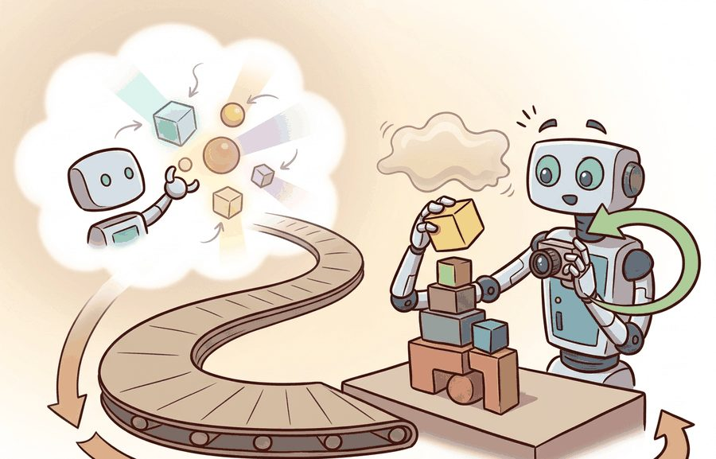
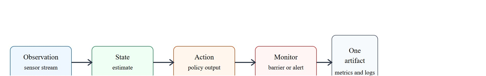
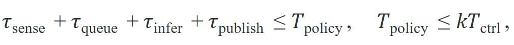
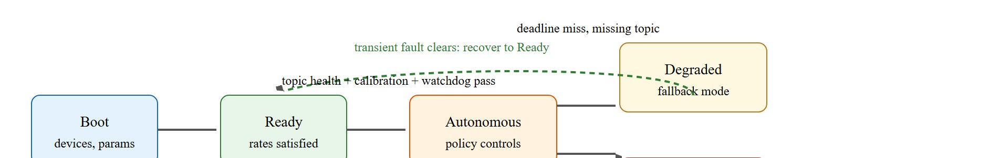

For From notebook to robot, deployment quality is measured by the command stream, safety monitor state, and replayable evidence behind each command.
A Careful Control Loop

This section assumes familiarity with the state estimation concepts introduced in section 8.6 and the safety monitor designs from section 53.4, which define the override contract that deployment must respect. The timing and latency constraints developed here are extended in section 55.3, where inference offloading to an edge server resolves the deadline violations identified in the worked example. The deployment state machine recurs in Part XI alongside the robustness evaluation techniques of section 54.2.
A robot arm scores 94% on a manipulation benchmark, then stops dead the first time it runs on physical hardware: a clock skew (a timing offset between two device clocks that should agree) between the camera and the joint encoder is 18 milliseconds, enough to corrupt every state estimate. The model was never the problem. Embodied AI systems fail at the seam between training and deployment far more often than they fail at the model level, and those failures are happening faster now because more teams are shipping pretrained checkpoints straight to hardware. This section takes you through that seam: how to export a checkpoint into a real-time inference path, define the sensor and action contract a safety monitor can enforce, and produce the replayable evidence that distinguishes a successful demo from a deployable system.
A common assumption is that a model achieving high accuracy in a notebook is ready for robot hardware, and that hardware failures point to model defects. Both assumptions are wrong. The dominant failures at the notebook-to-robot boundary are systems issues: clock skew, stale sensor topics, calibration mismatch, and startup races. These faults are invisible in synchronous notebook execution. Treat deployment as a systems-identification problem, separate from model quality. A 94% benchmark score says nothing about whether camera timestamps align with joint encoders, whether the exported checkpoint handles real input shapes, or whether the control loop absorbs inference latency without accumulating unsafe positional error.
Figure 55.1A traces the pipeline this section builds: a trained checkpoint becomes an exported model, a hardware abstraction layer (a software shim that translates a model's abstract action into device-specific joint commands) maps its output to joint commands, and an integration test verifies round-trip latency against the control rate before the first physical run. A notebook hides process boundaries, start-up races, stale topics, missing calibration, device contention, and undeclared operator assumptions. The robot experiences all of them concurrently, so deployment is a systems-identification step as much as a packaging step.
The practical question is therefore sharper than "does the model work?" It is: which sensors and clocks define the current state estimate, which action interface is authoritative, which monitor may override it, and which artifact proves that the resulting behavior is acceptable under perturbation?
Before motion is enabled, name the observation schema, state estimator owner, action rate, timeout, fallback state, and rollback condition. Without those fields, a successful demo is not yet a deployable result.

Deployment begins by splitting the system into a high-rate actuation loop, a perception and estimation path, a policy service, and a supervisory layer. The minimum timing constraint is

where $T_{\mathrm{ctrl}}$ is the low-level controller period and $k$ is the number of controller ticks for which a policy action may remain valid. Once that inequality is violated, the deployment problem is no longer "model quality" but the stale-command control trap.
The physical stakes are higher than a missed frame. A stale joint-velocity command keeps driving the arm in a direction the policy no longer intends. The next valid command must then correct the accumulated positional error under inertia. On a contact-rich task such as peg insertion, 200 ms of unguided motion can shear a connector or trigger an emergency stop. Stiffness and gravity make the situation asymmetric: the robot does not pause and wait, it continues executing the last command. At a 10 Hz policy rate the entire sense-to-publish budget is 100 ms. The 18 ms clock skew that killed the Spot demo in the opening example consumed nearly a fifth of that budget before the policy even ran, leaving less margin than a single dropped camera frame.
A policy that works in simulation but fails on hardware is not a policy; it is an aspiration waiting for a deployment contract.
The timing constraint has a direct physical consequence: a robot controller does not pause when the policy is slow. It continues executing the last command it received, accumulating motion in the wrong direction until a fresh command arrives. Keeping the total sensing-to-publish delay inside one policy period is the requirement that prevents this accumulation from exceeding the error budget the task allows.
Staleness is detected by attaching a monotonic timestamp (a clock reading that only ever increases and is immune to wall-clock adjustments, where its purpose is to measure elapsed age reliably) to every policy output and comparing it against the controller's local clock at the moment of application. If the age of the command exceeds max_staleness_ms, the controller substitutes the fallback action (typically zero velocity or a hold torque) rather than applying the expired command. This timestamp-gating runs entirely in the low-level controller loop, so it operates at $T_{\mathrm{ctrl}}$ frequency without waiting for the policy process to respond.
Exporting the checkpoint and mapping its output to joint commands are the two steps figure 55.1A names, and both need concrete mechanics, not just names. Export means running torch.jit.trace or torch.onnx.export on the trained model so it becomes TorchScript or ONNX: a serialized graph of tensor operations that a runtime can execute without the original Python training code, the training-time class definitions, or a live Python interpreter at all. The hardware abstraction layer then sits downstream of that exported graph: it takes the policy's raw output tensor (for example, a vector of joint velocities in the model's normalized units) and converts it into the specific message type, unit convention, and joint ordering the robot's driver expects, so the same exported policy can drive different robot models without retraining.
Before your first hardware session, verify that torch.jit.trace or torch.onnx.export succeeds on the exact input shape the robot will send. Policies that contain Python-level if branches conditioned on tensor values, or that use torch.Tensor.item() inside the forward pass, will silently trace only the branch taken during export and produce wrong outputs on the robot without raising an error. Run the exported model on at least one out-of-distribution observation shape before enabling autonomy; a shape mismatch surfaces as a cryptic runtime error mid-trial, not at export time.
Consider a specific case. A Boston Dynamics Spot runs a vision-language navigation policy at 5 Hz over a 100 Hz joint controller, giving $k = 20$ ticks of command validity. Suppose depth-camera processing and policy inference together consume 180 ms on an onboard Jetson AGX. This violates the inequality: $\tau_{\mathrm{infer}} = 180\,\text{ms}$ against $T_{\mathrm{policy}} = 200\,\text{ms}$ leaves only 20 ms for queuing and publish. Any additional queue delay then makes the controller execute a stale command for the next 20 ticks, roughly 200 ms of unguided motion. The fix is not to retrain the policy. Instead, offload inference to an edge server or reduce the policy rate to 4 Hz, which widens $T_{\mathrm{policy}}$ to 250 ms and restores the margin.
A useful evidence record is $e_i=(x_i,\hat s_i,a_i,m_i,\ell_i,z_i)$, where $x_i$ is the scenario context, $\hat s_i$ is the estimator state, $a_i$ is the issued command, $m_i$ is the monitor transition, $\ell_i$ is the latency vector, and $z_i$ is the artifact id. Every deployment claim in this chapter should be recoverable from one set of $e_i$ records.
The mechanism is startup, sense, estimate, decide, constrain, execute, observe, and recover. Each verb must have an owner process, a timing budget, and a failure mode that the artifact schema can represent explicitly.

Systems that lack an explicit Degraded state collapse the transition directly from Autonomous to Rollback (or, worse, to an uncontrolled stop). In practice this means a single missed deadline triggers a full restart rather than a graceful reduction in autonomy, such as switching to a slower safe-velocity policy or handing off to operator teleoperation. The transitions in and out of this state are exactly the events that the deployment must log and monitor so that a later audit can reconstruct why autonomy was reduced. The Degraded state exists precisely to absorb transient faults: a camera frame drop, a momentary queue overrun, or a single watchdog miss (a watchdog is a background timer that trips when an expected event, such as a fresh command or sensor frame, fails to arrive within its deadline; the Step-Through box below works through one concretely). Without it, the deployment has only two outcomes (working or stopped), which makes the system brittle on hardware where one-off glitches are the norm rather than the exception.
To make those evidence records concrete, the example below starts from the one artifact every record depends on: a manifest that pins down the rates, staleness bound, and readiness checks before any of the $e_i$ fields can be populated.
A notebook policy looks stable because the camera stream, estimator, and model share one synchronous process. On the robot, the camera starts late, frames drop, and models reload mid-run. The deployment artifact must expose each of these conditions rather than collapse them into one final score.
from dataclasses import dataclass, asdict
import json
@dataclass
class DeploymentManifest:
section: str
control_hz: int
policy_hz: int
max_staleness_ms: int
fallback_mode: str
rollback_trigger: str
readiness_checks: list[str]
def as_row(self) -> dict[str, object]:
return asdict(self)
manifest = DeploymentManifest(
section="55.1",
control_hz=100,
policy_hz=10,
max_staleness_ms=80,
fallback_mode="hold_last_safe_command_then_stop",
rollback_trigger="two consecutive watchdog failures or any emergency-stop event",
readiness_checks=[
"camera topic alive",
"extrinsics loaded",
"policy checksum verified",
"controller deadline miss rate < 0.1%",
],
)
print(json.dumps(manifest.as_row(), indent=2)){
"section": "55.1",
"control_hz": 100,
"policy_hz": 10,
"max_staleness_ms": 80,
"fallback_mode": "hold_last_safe_command_then_stop",
"rollback_trigger": "two consecutive watchdog failures or any emergency-stop event",
"readiness_checks": [
"camera topic alive",
"extrinsics loaded",
"policy checksum verified",
"controller deadline miss rate < 0.1%"
]
}DeploymentManifest dataclass serializes control rate, policy rate, max_staleness_ms, fallback mode, rollback trigger, and readiness checks into the single JSON row every evidence record depends on.Here a watchdog is a background timer that trips when an expected event (a fresh command or sensor frame) fails to arrive within its deadline, and extrinsics are the calibrated rigid-body transforms relating one sensor's coordinate frame to another. Trace the timestamp-gating rule with concrete numbers. Manifest sets control_hz=100 (controller tick every 10 ms) and max_staleness_ms=80. The policy publishes command A at monotonic time t = 1000 ms, then the inference process stalls.
Controller tick at t = 1040 ms: command age = 1040 - 1000 = 40 ms. Since 40 < 80, apply command A. Tick at t = 1070 ms: age = 70 ms, still 70 < 80, apply A. Tick at t = 1090 ms: age = 90 ms; now 90 > 80, so the gate fires. The controller discards A and substitutes the fallback (hold_last_safe_command_then_stop) instead of driving the arm with a 90 ms-old velocity command. A fresh command B arrives at t = 1120 ms with its own timestamp; the next tick at t = 1130 ms computes age = 10 ms < 80 and resumes normal control. Across those 50 ms of staleness, the gate prevented roughly 5 controller ticks of unguided motion.
The expected output is a manifest with fields that an operator, an auditor, and a replay script can all consume directly. If the rollout report later claims success but cannot point back to explicit readiness checks, the system is still operating in notebook mode intellectually even if it is physically on a robot.
The hand-built manifest stays small on purpose. In production, ROS 2 lifecycle nodes, Launch files, MLflow or DVC, and signed artifact registries should preserve the same contract while adding versioning, rollout history, and retrieval of exact binaries and configs.
Whether the manifest is hand-built or backed by a production registry, the steps that turn it into a trustworthy deployment are the same; the following recipe sequences them.
Copying notebook code into a robot package without declaring timing and rollback semantics creates a silent mode switch: the system looks deployed, but no one can say which assumptions still hold.
A mobile manipulator team moving from MuJoCo to hardware often discovers that the grasp policy is not the first thing that fails. More common early failures are mismatched camera frames, stale extrinsics, actuator enable races, and control packets arriving after the grasp window. A good deployment artifact makes those systems faults legible instead of mislabeling them as learning failures.
Amazon Robotics moves the notebook-to-robot seam into managed infrastructure: floor robots run perception and policy code packaged as versioned containers, with a fleet manager enforcing readiness checks (localization fix, drive enable, battery state) before a unit is admitted to the autonomous pool. A stale or late motion command degrades the robot to a safe-stop state rather than continuing the last velocity, which is exactly the staleness-gating contract this section formalizes, applied across thousands of concurrent units.
On-device inference compression for real-time deployment. Deploying billion-parameter visuomotor policies (a visuomotor policy is a model that maps camera images directly to motor commands) such as pi0 and OpenVLA-OFT onto edge hardware requires sub-30 ms forward passes to stay inside a 10 Hz policy budget. The 2024 OpenVLA-OFT work (Kim et al., Stanford IRIS Lab, 2024) reported that parameter-efficient fine-tuning with FP8 (8-bit floating-point) quantization typically cuts Jetson AGX inference latency by roughly 3x with no measurable task degradation on the benchmarks tested, which suggests, though does not by itself prove across all tasks, that on-device deployment of 7B-parameter policies is becoming viable (as of 2024) on consumer-grade robot compute.
Hierarchical control with asynchronous policy layers. The pi0 system (Black et al., Physical Intelligence, 2024) showed that separating a low-frequency goal-conditioned transformer (a network whose output is conditioned on a target or goal state, running at 5-10 Hz) from a high-frequency diffusion action head (a fast module, running at 50 Hz, that generates fine-grained motor trajectories by iteratively denoising a noise sample) lets the fast layer absorb contact transients while the slow layer maintains semantic intent. This architecture decouples the deployment timing constraint into two tractable sub-problems and was, as of 2024-2025, an emerging candidate template for real-time large-model deployment.
Hardware-in-the-loop deployment certification. The 2025 RoboDeploy framework (Toyota Research Institute, 2025) introduced automated readiness certificates that replay a policy against recorded hardware logs before each physical run, catching clock-skew and topic-staleness regressions in CI rather than during live trials.
So far: research is attacking the notebook-to-robot seam from three angles, shrinking the model so it fits the latency budget (FP8 quantization), splitting the policy into a slow planning layer and a fast reactive layer so each has an easier timing target, and certifying the whole pipeline against recorded logs before it ever touches hardware.
Open problem. Current deployment manifests are hand-authored and static: they declare a fixed max staleness threshold at startup and never adapt. An open problem is learning adaptive staleness thresholds online from contact-force and torque-error signals, so the controller can tighten the freshness requirement when it detects a contact-rich regime and relax it during free-space motion, without requiring a human to re-specify the manifest per task.
Can you state the policy rate, controller rate, maximum command staleness, readiness checks, and rollback trigger without opening another file? If not, the deployment contract is incomplete.
From notebook to robot becomes operational when the model is subordinated to a runtime contract. The contract should specify who owns each transition in the boot-to-ready-to-autonomous path, how stale actions are detected, and when the robot leaves autonomy for a failure-recovery path without human debate.
The disciplined habit is to separate three claims. The conceptual claim says the policy should improve task performance. The systems claim says the policy can live inside the timing and safety envelope. The evidence claim says the resulting deployment bundle proves both.
| Tool or Library | Role in From notebook to robot |
|---|---|
| ROS 2 lifecycle nodes | Expose explicit boot, ready, degraded, and shutdown transitions. |
| Docker or Nix | Freeze runtime dependencies and support reproducible rollback. |
| MLflow or DVC | Bind the deployed manifest to its exact evaluation artifact. |
For From notebook to robot, connect benchmark design, sim-to-real transfer, uncertainty, and safety barriers through the deployment artifact that will be checked before release.
Create one deployment bundle for five hardware or simulator runs. Include the manifest, a timing trace, readiness-check outcomes, monitor transitions, and a short failure diagnosis. Then change one deployment setting such as queue depth or policy rate and verify that the two bundles can be compared field by field.
When the transition to hardware fails, assign the fault to startup sequencing, timing, frame inconsistency, estimator drift, stale command handling, operator procedure, or evaluation hygiene. Then rerun a perturbation that isolates exactly one of those mechanisms.
For From notebook to robot, schema strictness is cheaper than discovering a missing field during a moving-robot trial; require the log before comparing outcomes.
From notebook to robot is successful only when the learned component is wrapped in an explicit timing, safety, and rollback contract that another builder can audit end to end.
Design a deployment manifest for a small mobile manipulator. Specify controller and policy rates, freshness threshold, readiness checks, one perturbation, and one rollback rule. Then state which artifact fields would prove the manifest was respected during execution.
Quigley, M. et al. ROS: an open-source Robot Operating System. ICRA Workshop, 2009.
Use for the robotics middleware lineage behind nodes, topics, services, bags, and deployment boundaries.
OpenTelemetry project documentation. https://opentelemetry.io/docs/
Use for tracing, metrics, and logs when robot deployment evidence must connect software events to runtime behavior.
Beginner (weekend): Deployment manifest validator in PyBullet. Build a tabletop pick-and-place policy in PyBullet and write a Python script that enforces the DeploymentManifest contract (control rate, policy rate, max staleness, readiness checks) before enabling the policy loop. The key challenge is detecting a simulated "stale command" by timestamping each policy output and substituting a hold action when the age exceeds max_staleness_ms, so the robot freezes rather than drifting.
Intermediate (1-2 weeks): ROS 2 lifecycle deployment bridge for a LeRobot policy. Take a pretrained LeRobot manipulation checkpoint and wrap it in a ROS 2 lifecycle node that transitions through Boot, Ready, Autonomous, Degraded, and Rollback states as defined in this section. The key challenge is implementing the watchdog that detects camera-topic staleness and triggers the Degraded transition gracefully, rather than crashing, when a frame is dropped mid-trial.
After From notebook to robot, the next section should reuse the artifact schema while changing one deployment interface or failure mode, so comparisons remain auditable.